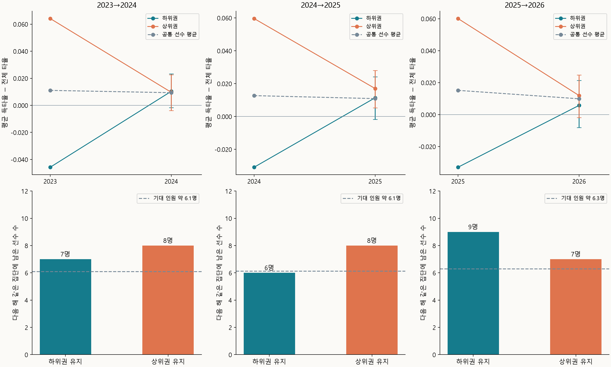

앞 글에서는 득타율이 타율보다 높게 나타나는 이유를 살펴봤다. 이번에는 타율보다 득타율이 높았던 선수가 다음 해에도 같은 모습을 보이는지 알아봤다. 이를 통해 득점권에서 더 잘 치는 것이 선수 개인의 특징으로 나타나는지 판단해보고 싶었다.
시즌마다 전체 300타수와 득점권 75타수 이상을 기록한 선수들을 대상으로, 2023→2024·2024→2025·2025→2026의 세 경우에서 같은 모습이 나타나는지 살펴봤다.
득타율이 타율보다 높은 선수들
2026년 분석 대상 237명 중 득타율이 타율보다 높은 선수는 136명, 57.4%였다. 낮은 선수는 101명, 42.6%였다.
앞선 세 시즌에서도 득타율이 타율보다 높은 선수가 절반 이상이었다.
| 시즌 | 분석 대상 | 득타율이 타율보다 높은 선수 | 비율 | 95% 신뢰구간 |
|---|---|---|---|---|
| 2023년 | 236명 | 137명 | 58.1% | 51.7~64.2% |
| 2024년 | 235명 | 144명 | 61.3% | 54.9~67.3% |
| 2025년 | 238명 | 146명 | 61.3% | 55.0~67.3% |
| 2026년 | 237명 | 136명 | 57.4% | 51.0~63.5% |
득타율이 타율보다 높은 선수의 비율은 매년 57~61%였다. 연도에 따른 차이는 통계적으로 뚜렷하지 않았다(p=0.750).
매년 비슷한 비율로 나타났다면, 같은 선수들이 다음 해에도 높은 쪽에 남았는지 살펴볼 필요가 있었다.
다음 해에도 높은 선수들
두 시즌 모두 타수 기준을 충족한 선수는 2023→2024에 158명, 2024→2025에 157명, 2025→2026에 163명이었다.
| 비교 시즌 | 전년도 구분 | 선수 수 | 다음 해 득타율이 타율보다 높은 선수 | 무작위 기대 인원 |
|---|---|---|---|---|
| 2023→2024 | 높았던 선수 | 98명 | 55명 | 약 57.1명 |
| 2023→2024 | 낮았던 선수 | 60명 | 37명 | 약 34.9명 |
| 2024→2025 | 높았던 선수 | 99명 | 62명 | 약 59.9명 |
| 2024→2025 | 낮았던 선수 | 58명 | 33명 | 약 35.1명 |
| 2025→2026 | 높았던 선수 | 106명 | 61명 | 약 60.5명 |
| 2025→2026 | 낮았던 선수 | 57명 | 32명 | 약 32.5명 |
모든 비교에서도 실제 인원은 기대 인원과 가까웠다. 전년도에 높았다는 구분이 다음 해에도 이어지는 모습은 세 비교 모두 뚜렷하지 않았다.
차이 크기의 연도 간 비교
이번에는 차이의 크기까지 다음 해에 이어지는지 살펴봤다.
| 비교 시즌 | 공통 선수 | 득타율 차이의 연도 간 상관 | 95% 신뢰구간 | 전체 타율의 연도 간 상관 |
|---|---|---|---|---|
| 2023→2024 | 158명 | −0.019 | −0.170~0.134 | 0.442 |
| 2024→2025 | 157명 | 0.062 | −0.098~0.224 | 0.469 |
| 2025→2026 | 163명 | 0.005 | −0.147~0.165 | 0.357 |
같은 선수들의 일반 타율은 상관이 0.357~0.469로 어느 정도 이어졌다. 그러나 득타율과 전체 타율 차이의 연도 간 상관은 −0.019~0.062로 세 비교 모두 0에 가까웠다.
상위권과 하위권의 다음 시즌
차이가 특히 컸던 선수들이 다음 시즌까지 반복되는지도 따로 확인했다. 각 비교의 공통 선수를 전년도의 득타율 차이로 정렬해 상위 20%와 하위 20%를 뽑았다. 각 집단은 2023→2024와 2024→2025에서 31명, 2025→2026에서 32명이었다.

| 비교 시즌 | 전년도 집단 | 선수 수 | 전년도 평균 차이 | 다음 해 평균 차이 | 다음 해 평균의 95% 신뢰구간 |
|---|---|---|---|---|---|
| 2023→2024 | 상위권 | 31명 | +0.064 | +0.010 | −0.004~+0.023 |
| 2023→2024 | 하위권 | 31명 | −0.046 | +0.010 | −0.002~+0.023 |
| 2024→2025 | 상위권 | 31명 | +0.060 | +0.017 | +0.005~+0.028 |
| 2024→2025 | 하위권 | 31명 | −0.031 | +0.011 | −0.002~+0.024 |
| 2025→2026 | 상위권 | 32명 | +0.060 | +0.012 | −0.002~+0.025 |
| 2025→2026 | 하위권 | 32명 | −0.033 | +0.006 | −0.008~+0.021 |
세 비교 모두 상위권과 하위권의 차이가 줄어들었다.
| 비교 시즌 | 전년도 집단 | 선수 수 | 다음 해 같은 집단에 남은 선수 | 무작위 기대 인원 |
|---|---|---|---|---|
| 2023→2024 | 상위권 | 31명 | 8명 | 약 6.1명 |
| 2023→2024 | 하위권 | 31명 | 7명 | 약 6.1명 |
| 2024→2025 | 상위권 | 31명 | 8명 | 약 6.1명 |
| 2024→2025 | 하위권 | 31명 | 6명 | 약 6.1명 |
| 2025→2026 | 상위권 | 32명 | 7명 | 약 6.3명 |
| 2025→2026 | 하위권 | 32명 | 9명 | 약 6.3명 |
다음 해에도 상위권에 남은 선수는 7~8명, 하위권에 남은 선수는 6~9명이었다. 이 정도의 반복은 선수의 영향이 없다고 판단된다.
마무리
전년도에 높았던 선수들이 다음 해에도 높은 쪽에 남는 인원은 무작위 기대 인원과 비슷했다. 차이의 크기도 세 비교 모두 거의 이어지지 않았고, 상하위권의 간격도 다음 해에는 작아졌다.
따라서 득타율이 타율보다 높거나 낮은 모습이 선수 개인의 특징으로 이어지는 경향은 뚜렷하지 않았다.
데이터 출처
MLB 공식 Stats API의 2023~2026년 정규시즌 기록을 사용했다.